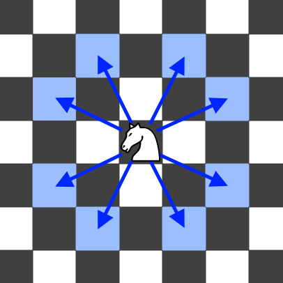

688. 骑士在棋盘上的概率
题目与约束
在一个 n x n 的国际象棋棋盘上，一个骑士从单元格 (row, column) 开始，并尝试进行 k 次移动。行和列是 从 0 开始 的，所以左上单元格是 (0,0) ，右下单元格是 (n - 1, n - 1) 。
象棋骑士有8种可能的走法，如下图所示。每次移动在基本方向上是两个单元格，然后在正交方向上是一个单元格。

每次骑士要移动时，它都会随机从8种可能的移动中选择一种(即使棋子会离开棋盘)，然后移动到那里。
骑士继续移动，直到它走了 k 步或离开了棋盘。
返回 骑士在棋盘停止移动后仍留在棋盘上的概率 。
示例 1：
输入: n = 3, k = 2, row = 0, column = 0
输出: 0.0625
解释: 有两步(到(1,2)，(2,1))可以让骑士留在棋盘上。
在每一个位置上，也有两种移动可以让骑士留在棋盘上。
骑士留在棋盘上的总概率是0.0625。
示例 2：
输入: n = 1, k = 0, row = 0, column = 0
输出: 1.00000
提示:
-
1 <= n <= 25 -
0 <= k <= 100 -
0 <= row, column <= n - 1
核心不变量
设
dp[r][c]为“走完当前步数后，骑士恰好落在(r,c)且此前从未离开棋盘的概率”，每走一步就把每个格子的概率质量按 1/8 分摊到 8 个合法落点，走出棋盘的质量直接丢弃。
完整推导
思路推导
- 直觉与痛点（要的是“一直在棋盘上”的概率）
骑士每步随机选 8 个方向之一，一旦某步落点出界就判负。我们要的是“连续 k 步都不出界”的总概率。终点可能在棋盘任意位置，因此不能只盯一个终点。
- 破局思路（正推概率质量）
用二维数组记录“当前仍在棋盘上时，落在各格的概率”。初始 dp[row][column] = 1。每走一步：
- 新建全 0 的
next； - 对每个概率非零的
(r,c)，枚举 8 个走法，若落点(nr,nc)仍在棋盘内，则next[nr][nc] += dp[r][c] / 8； - 越界的走法不累加，其概率质量自然消失（表示“这条路径已经出局”）。
走完 k 步后，把 dp 所有格子的概率相加，就是“从未出界”并停在棋盘上的总概率。
- 关键追问（为什么每步除以 8、如何理解样例）
每一步都有 8 个等概率选择，所以每条延伸路径的概率都乘以 1/8。以 n=3, k=2, (0,0) 为例：第一步只有 (1,2)、(2,1) 两个不越界，各得 1/8；第二步每个位置又只有 2 个不越界选择，各再乘 2/8，总概率 2 × (1/8) × (2/8) = 1/16 = 0.0625。
- 边界：
k = 0时不移动，概率恒为 1；n = 1且k > 0时骑士必然第一步就出界，概率为 0。
Java 实现（概率 DP 逐层转移）
class Solution {
// 骑士的 8 种走法
private static final int[][] MOVES = {
{1, 2}, {2, 1}, {2, -1}, {1, -2},
{-1, -2}, {-2, -1}, {-2, 1}, {-1, 2}
};
public double knightProbability(int n, int k, int row, int column) {
// dp[r][c]：当前步数后仍留在棋盘且落在 (r,c) 的概率
double[][] dp = new double[n][n];
dp[row][column] = 1.0;
for (int step = 0; step < k; step++) {
double[][] next = new double[n][n];
for (int r = 0; r < n; r++) {
for (int c = 0; c < n; c++) {
if (dp[r][c] == 0.0) continue; // 剪枝：该格无概率
for (int[] m : MOVES) {
int nr = r + m[0];
int nc = c + m[1];
if (nr >= 0 && nr < n && nc >= 0 && nc < n) {
// 8 种选择均等，越界的 1/8 自动丢弃
next[nr][nc] += dp[r][c] / 8.0;
}
}
}
}
dp = next;
}
// 累加所有仍在棋盘上的概率
double ans = 0.0;
for (int r = 0; r < n; r++) {
for (int c = 0; c < n; c++) {
ans += dp[r][c];
}
}
return ans;
}
}
C++ 实现
#include <vector>
using namespace std;
class Solution {
public:
double knightProbability(int n, int k, int row, int column) {
static const int moves[8][2] = {
{1, 2}, {2, 1}, {2, -1}, {1, -2},
{-1, -2}, {-2, -1}, {-2, 1}, {-1, 2}
};
vector<vector<double>> dp(n, vector<double>(n, 0.0));
dp[row][column] = 1.0;
for (int step = 0; step < k; step++) {
vector<vector<double>> next(n, vector<double>(n, 0.0));
for (int r = 0; r < n; r++) {
for (int c = 0; c < n; c++) {
if (dp[r][c] == 0.0) continue;
for (int m = 0; m < 8; m++) {
int nr = r + moves[m][0];
int nc = c + moves[m][1];
if (nr >= 0 && nr < n && nc >= 0 && nc < n) {
next[nr][nc] += dp[r][c] / 8.0;
}
}
}
}
dp.swap(next);
}
double ans = 0.0;
for (int r = 0; r < n; r++)
for (int c = 0; c < n; c++)
ans += dp[r][c];
return ans;
}
};
Python 实现
class Solution:
def knightProbability(self, n: int, k: int, row: int, column: int) -> float:
moves = [(1, 2), (2, 1), (2, -1), (1, -2),
(-1, -2), (-2, -1), (-2, 1), (-1, 2)]
# dp[r][c]：当前步数后仍留在棋盘且落在 (r,c) 的概率
dp = [[0.0] * n for _ in range(n)]
dp[row][column] = 1.0
for _ in range(k):
nxt = [[0.0] * n for _ in range(n)]
for r in range(n):
for c in range(n):
if dp[r][c] == 0.0:
continue
for dr, dc in moves:
nr, nc = r + dr, c + dc
if 0 <= nr < n and 0 <= nc < n:
nxt[nr][nc] += dp[r][c] / 8.0
dp = nxt
return sum(sum(row_vals) for row_vals in dp)
复杂度
- 时间：
O(k·n²)。共k步，每步遍历n²个格子、对每格尝试 8 个常数走法。 - 空间：
O(n²)。两个n×n的 DP 表（当前层与下一层）来回滚动。
- 每步都除 8，而不是最后除
8^k：因为越界分支会让“仍在棋盘”的概率质量逐步减少，只有在每一步分摊时除以 8 才能正确反映条件概率。 - 越界走法直接丢弃：不要对越界落点做任何累加，那部分概率代表“已经离开棋盘”，不该计入答案。
- 滚动数组：用
next承接下一步再赋回dp，避免原地更新造成同一步内被重复使用。 dp保持“仍在棋盘”语义：如果试图记录“出界概率”，边界与初始化更容易出错；直接记录留在棋盘的概率更直观。- 特判直觉：
k == 0返回 1.0；n == 1且k > 0返回 0.0，代码逻辑自然满足，无需额外写死。